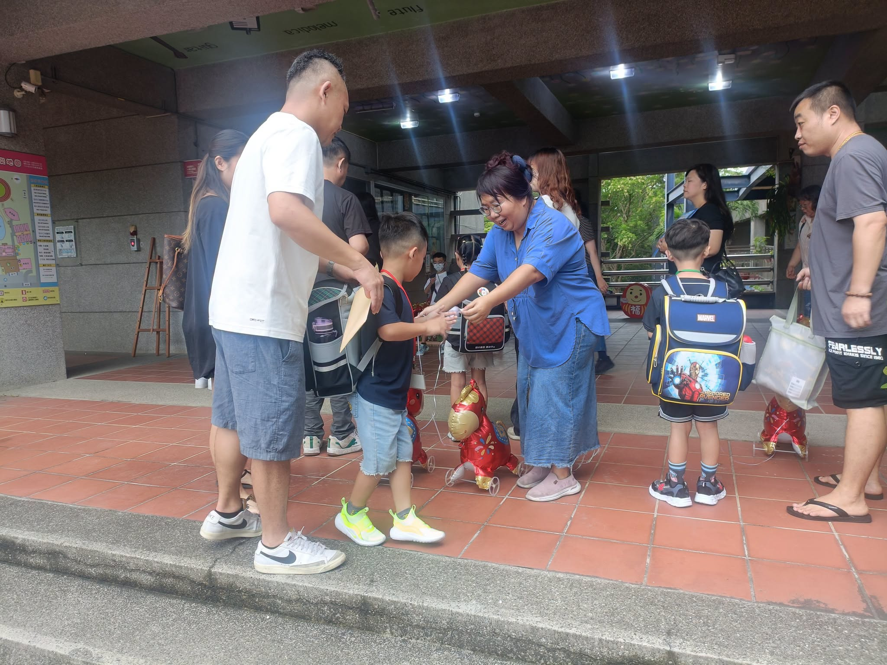
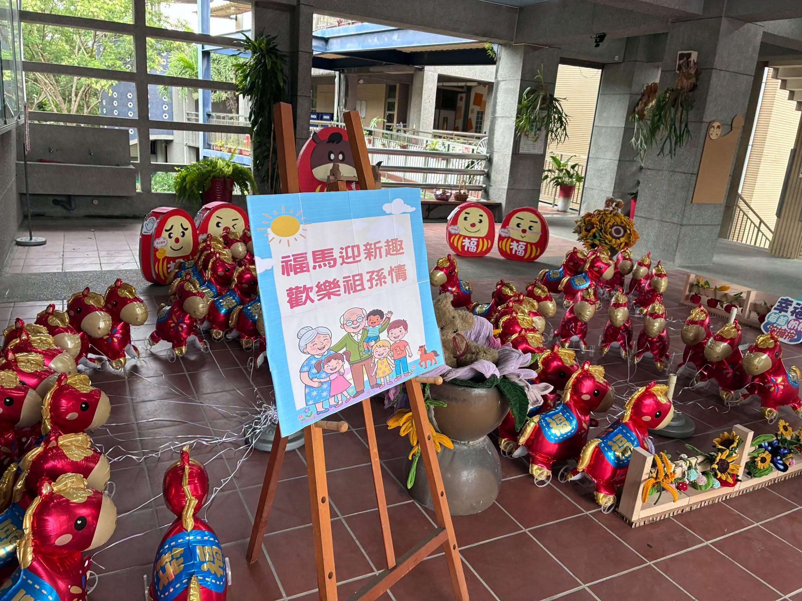

What a lively, warm morning at Hsinmin Elementary! From early on, the campus filled with small, hopeful faces — children holding a parent's hand as they walked through the school gate for New Student Registration Day.
Each new first grader picked up their very own name tag, and then the school had one more surprise waiting: a shiny "lucky little horse" balloon (福氣小馬 🐴), one for every child about to begin the first-grade journey.


Step by step, the children walked into the classrooms where they will soon learn, play, and make friends. Some looked around wide-eyed with excitement; others carried a little bit of nervousness on their faces. In their eyes we could see how much they were looking forward to this new life — and we could see growing quietly happening, too.
Behind every child walking forward stood a pair of parents' eyes, proud but also a little reluctant to let go. From holding a tiny hand on a first walk, to holding that hand today at the school gate, families surely feel so much: wanting to stay a little longer, yet knowing it is time for the child to start learning to be independent.
「長大」也不是一瞬間的事，而是從今天這一步、那一步，慢慢學會勇敢。
Dear new first graders: you don't need to be afraid or nervous. On this campus there are teachers who will walk beside you, classmates to explore and laugh with, and parents whose support is always right behind you.
May you carry today's lucky little horse into school — bringing good fortune with you, and tucking a little courage into your heart. From today, go and happily meet new friends and learn new things, and write your very own first-grade story.
Welcome to Hsinmin Elementary! Let's step into a brand-new school life together. 🎒✨
新生報到日｜帶著期待，走進小一的第一步
今天的新民國小，好熱鬧、好溫暖！一早，校園裡迎來一張張稚嫩又充滿期待的小臉蛋，牽著爸爸媽媽的手，走進新民國小大門口準備報到囉～～領取屬於自己的名牌後，學校準備了「福氣小馬」🐴，迎接每一位即將踏上小一旅程的新鮮人。
💗 孩子們一步一步走進即將學習、遊戲、交朋友的新教室，有的孩子興奮地東張西望，也有些孩子臉龐上夾雜著一點點緊張，在他們的眼中，我們彷彿看見了孩子對新生活的期待，也看見了成長悄悄發生的模樣。🌟
💞 而在孩子往前走的身影背後，是爸爸媽媽一雙雙既欣慰又有些捨不得的眼睛。從第一次牽著小小的手走路，到今天牽著孩子走進校園，家長們心裡一定有好多的不捨。想再多陪一下，卻知道孩子要開始學著獨立；想緊緊牽著，卻也明白，是時候慢慢放手。
「放手」不是離開，而是相信孩子有能力走向自己的下一段旅程。而「長大」也不是一瞬間的事，而是從今天這一步、那一步，慢慢學會勇敢。❤️
🔆 親愛的小一新鮮人，不用害怕緊張，因為校園裡有老師溫暖的陪伴、有同學一起探索的歡笑，還有爸爸媽媽永遠在你身後的支持。願你帶著今天收到的「福氣小馬」🐴，把福氣帶進校園，把勇氣放進心裡，從今天開始，開開心心認識新朋友、學習新事物，寫下屬於自己的小一故事！
🎒✨ 歡迎你們來到新民國小！讓我們一起迎接嶄新的小學生活吧！
Tap 🔊 to listen · 點喇叭聽發音
The teachers were there to welcome every new first grader.老師們在那裡歡迎每一位小一新生。
Some children felt a little nervous on their first day.有些孩子在第一天覺得有點緊張。
Walking into a new classroom is a brave thing to do.走進一間新教室是一件勇敢的事。
Starting school helps children become more independent.開始上學幫助孩子變得更獨立。
Parents give their children support from right behind them.爸爸媽媽在孩子身後給他們支持。
Today is the start of a brand-new journey.今天是一段全新旅程的開始。
Match the word to its meaning
把英文和中文配對
Matched 配對成功：0 / 6